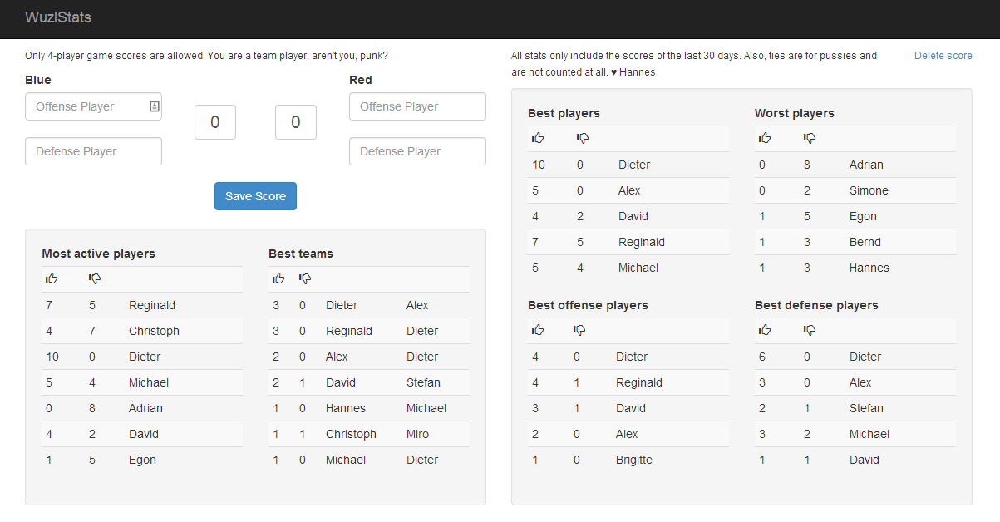

 Wuzlstats is a little web application to track the Wuzl* score at the office and to get some interesting numbers and statistics out of it (Big Data at work ;-).
Click on the right to enlarge the (probably already outdated) screenshot. And sure, it's responsive and stuff to use it on your phone.
* Depending on where you come from, Wuzln may also be called Tischfußball or Tisch-Kicken or something even more absurd. Be assured, Wuzln is definitely the only way to name it correctly.
Wuzlstats is an ASP.NET MVC web application and requires IIS, .NET 4.5.1 and SQL Server to run.
But the easiest way by far is to use the free tier of Windows Azure to host it for you. This can be done directly from a GitHub repository, so you don't require anything at all on your workstation:
Db as connection string name.The entire source code is available on GitHub. The GitHub project site is also the right place for issues and feature requests.
You can download the full source code or (much better) fork it and add improvements of your own. Pull requests are very welcome.
{kind=link}